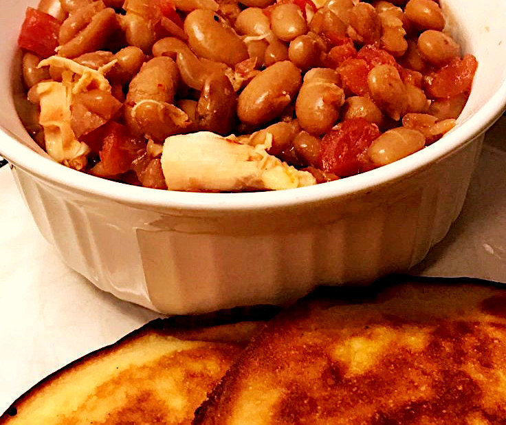

Chicken Chili

A real treat, crispy corn dodgers with zesty chicken chili.
Ingridients
- 8 ounces cooked chicken
- 2 1/2 pounds canned pinto beans
- 2 cups chicken broth
- 2 cups canned tomatoes with green chilies
- 3/4 cup water
- 1/4 cup salsa
- 1/4 cup ketchup
- 4 teaspoons lemon juice
- 1 dash pepper
- 1 dash cumin
- 1 dash cilantro
- 1/2 cup sugar
- 2 eggs
- 1/4 cup olive oil
- 1 cup flour
- 1/2 cup cornmeal
- 1 teaspoon baking powder
- 1 cup milk
- cooking oil to cover the bottom of your skillet
Steps
- Drain and rinse pinto beans.
- Place in a saucepan with chicken.
- Add chicken broth, tomatoes, water, salsa, ketchup, lemon juice and spices.
- Heat to boiling, reduce heat to lowest setting and cover.
- Cook for 20 minutes, checking occasionally and adding small amounts of water if necessary.
- 10 minutes before serving prepare corn dodgers.
- Beat sugar, egg and olive oil together in a mixing bowl with a pouring spout.
- Heap flour and cornmeal onto mixture.
- Sprinkle baking powder over the top.
- With a fork, mix baking powder into flour and cornmeal and then stir everything together.
- Add milk and mix well.
- Heat oil in a skillet or griddle over
- medium-high heat.
- When oil is hot pour batter onto griddle as
- you would pancakes.
- When one side is brown, turn corn dodgers and brown the other side.
- Serve with chili.